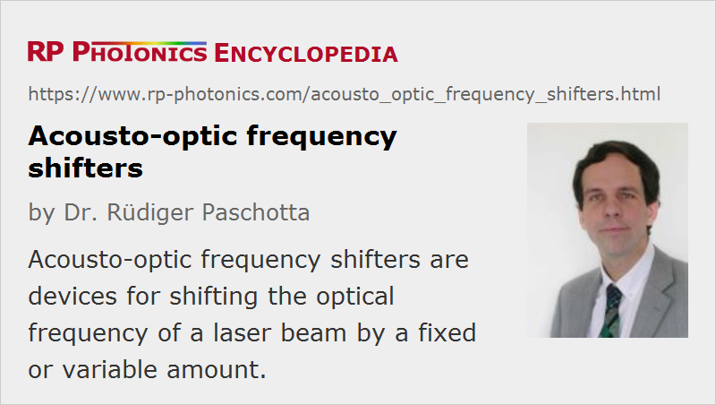

Acousto-optic Frequency Shifters
Acronym: AOFS
Definition: acousto-optic devices for shifting the optical frequency of a laser beam
German: akusto-optische Frequenzschieber
How to cite the article; suggest additional literature
Author: Dr. Rüdiger Paschotta
When light is diffracted at the traveling refractive index grating in an acousto-optic modulator, the diffracted light experiences a shift of optical frequency which is plus or minus the acoustic (or drive) frequency. That effect (which can be interpreted as a Doppler shift) is exploited in acousto-optic frequency shifters.
Drive frequencies are typically between some tens and hundreds of megahertz, rarely more than 1 GHz. The resulting change of optical wavelength is quite small. For larger frequency shifts, or for realizing very small frequency shifts (e.g. only a few MHz), one may cascade two or more devices. It is also possible to use a double pass through a single device in order to obtain twice the frequency shift.
Frequency shifters may either be operated with a fixed drive frequency, generating a fixed optical frequency offset, or with a variable drive frequency. In the latter case, one needs to consider the fact that the beam direction will change with the drive frequency; if that is detrimental, one may use methods to minimize such effects. It is also possible to operate a frequency shifter with several drive frequencies at the same time.
The optical input beam is typically a laser beam from a single-frequency laser. However, a frequency shifter would also work with a multimode beam, if its bandwidth is not too large.
Most acousto-optic frequency shifters are bulk devices, but there are also compact fiber-coupled versions (fiber-pigtailed AOFS). Light from the input fiber is first collimated, then sent through the modulator crystal and finally focused into the output fiber. There are also all-fiber frequency shifters (perhaps not commercially available) where the frequency shift is created within an optical fiber.
RF Drivers for Frequency Shifters
In contrast to acousto-optic modulators, frequency shifters are usually operated with a constant drive power. The drive frequency is often also fixed, but there are drivers for a variable frequency.
A variable frequency driver may contain a voltage-controlled oscillator (VCO), the frequency of which can be adjusted with an analog input drive signal. For higher frequency precision and stability, direct digital drivers are available. In other cases, the input signal is an RF signal with the wanted frequency, and the driver acts only as an RF power amplifier.
Important Performance Figures
Frequency Range
Obviously, a frequency shifter should provide the required frequency offset, or range of frequency shifts.
The optical bandwidth is usually not a concern; typically, such devices are used with very narrow-linewidth lasers. However, the range of operation wavelengths may be limited by anti-reflection coatings, e.g. to a width of the order of 100 nm.
Diffraction Efficiency
An important performance figure is the diffraction efficiency, which is typically of the order of 50% (and tentatively lower for longer optical wavelengths). In most applications, the non-diffracted (zero-order) beam is not usable.
Extinction of Non-shifted Beam
For some applications (e.g. in interferometers), it is essential to well suppress the un-shifted (zero-order) beam. In such cases, it is important that there is no excessive scattering of light in the device. Beyond the surface quality of the acousto-optic device, it is then important to operate the device with a laser beam of appropriate beam radius and proper alignment.
Applications of Frequency Shifters
Frequency shifters are needed for applications in optical frequency metrology and other areas of optical metrology. For example, laser Doppler vibrometry is based on an interferometer where a frequency shifter is incorporated into one interferometer arm. The resulting photodetector signal is then around the shifter's drive frequency, rather than around zero frequency. That way one can easily distinguish movements in opposite directions. This is just one example for heterodyne detection, where frequency shifters are often required.
Another field is laser spectroscopy, where one may rapidly scan a certain frequency range without requiring a tunable laser. The laser noise properties are also usually better for a fixed-frequency single-frequency laser than for a rapidly tuned laser.
Suppliers
The RP Photonics Buyer's Guide contains 17 suppliers for acousto-optic frequency shifters. Among them:
Questions and Comments from Users
Here you can submit questions and comments. As far as they get accepted by the author, they will appear above this paragraph together with the author’s answer. The author will decide on acceptance based on certain criteria. Essentially, the issue must be of sufficiently broad interest.
Please do not enter personal data here; we would otherwise delete it soon. (See also our privacy declaration.) If you wish to receive personal feedback or consultancy from the author, please contact him e.g. via e-mail.
By submitting the information, you give your consent to the potential publication of your inputs on our website according to our rules. (If you later retract your consent, we will delete those inputs.) As your inputs are first reviewed by the author, they may be published with some delay.
See also: acousto-optic modulators, acousto-optic deflectors
and other articles in the category photonic devices
|  |
If you like this page, please share the link with your friends and colleagues, e.g. via social media:
These sharing buttons are implemented in a privacy-friendly way!